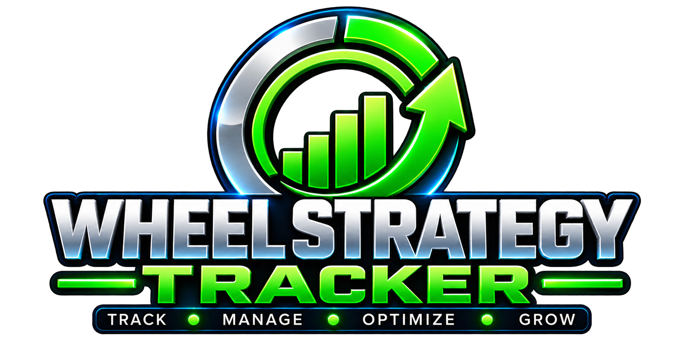

Connect to your broker
Connect directly to your broker and download your existing positions into the tracker—no manual portfolio setup.

Connect to your broker to download existing positions, then manage the complete wheel cycle with FIFO/LIFO lot tracking, automatic assignments, called-away shares, distributions, premium income, and cool-off controls.
WheelBot can execute the wheel strategy automatically through your broker. It has been tested running the wheel strategy on a $50,000 account. Autonomous strategy settings are not available in the beta; they will be introduced in the official release. Monitor live operation carefully.
Follow every stage of the wheel with a clear view of your positions, collected premium and performance.
Illustrative simulation of income analysis, NAV decay monitoring and portfolio rotation. Not a live recording or verified beta feature.
Manage lots, assignments, called-away shares, distributions, and the timing of your next trade—all in one workspace.
Connect directly to your broker and download your existing positions into the tracker—no manual portfolio setup.
Choose first-in, first-out or last-in, first-out tracking to manage share lots and position cost basis.
Follow put assignments as options turn into shares, keeping the wheel cycle organized.
Track covered-call exercises and shares called away as positions move into the next cycle.
Keep distributions and collected option premiums visible alongside your position history.
Use the cool-off feature to manage when a symbol is ready for its next wheel trade.
Review cash-secured puts, covered calls, cost basis, and results across completed cycles.
Buy once. Own forever. No subscriptions.
⬇ Download WheelBot Beta